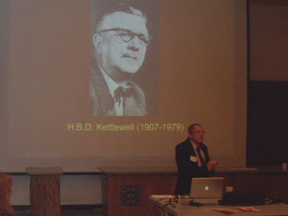
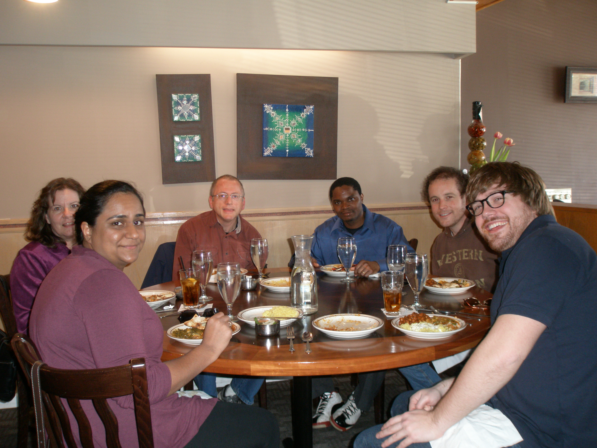

| David W. Rudge
Research
Home,
Teaching,
Science Education Links,
Genealogy
|
My research has focused specifically on how H.B.D. Kettlewell's classic experimental demonstrations of natural selection have and should be depicted from historical, philosophical, and science education perspectives. My curriculum vitae summarizes my research accomplishments. Here is a link to my account in Google Scholar.
|
|
|  |
History and Philosophy of Biology:
My research initially focused on the question of how experiments and other forms of inquiry allow scientists to learn about the world. It is a philosophical question about how scientists are able to use evidence gathered by observation and experiment to develop and establish claims about the world. It is also a historical question about how individual scientists, such as H.B.D. Kettlewell, were able to learn about the world with reference to their investigations.
|
| |
Science Education:
Since my arrival at Western Michigan University, I have come to recognize that this is also a question that falls within the domain of science education. In my research and teaching I am exploring whether and how the process by which scientists learn about the world is analogous to how introductory students learn science. I am also exploring whether and how the history and philosophy of science can help teachers teach and students learn about the nature of science.
|
|  |
Rudge & Williams Research Group:
Our research group is pursuing multiple lines of inquiry, including how the history of science can promote the learning of and about science, how history of science and scientific concepts are (and should be) depicted in science textbooks, and the role of feedback on student learning. Here's a page devoted to our research projects.
|